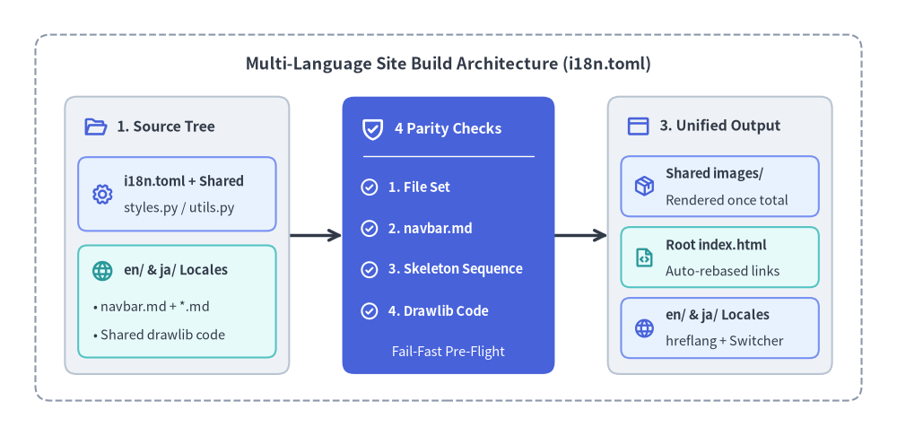
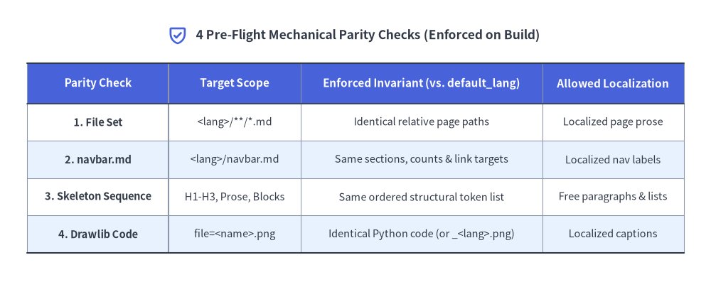

多言語ドキュメントサイト・ショーケース
Drawlib で構築された多言語ドキュメントサイトのショーケースへようこそ。ルート直下の i18n.toml 設定に基づき、英語（en/）と日本語（ja/）の Markdown ツリーから、共有図解アセット・自動リンク補正・言語スイッチャーを備えた統合静的 Web サイトを一括生成します。

Source Code
from drawlib.canvas import setup
from drawlib.icons import phosphor
from drawlib.lines import line
from drawlib.shapes import rectangle
from drawlib.styles import Styles
from drawlib.text import text
setup(width=152, height=74)
# Layer 1: Outer structural boundary (6.0-unit perimeter margin)
rectangle((76.0, 37.0), width=140.0, height=62.0, style=Styles.MutedDashed.patch(shape_r=2.5))
text(
(76.0, 63.0),
"Multi-Language Site Build Architecture (i18n.toml)",
style=Styles.DarkBold.patch(text_size=13.0),
)
# Layer 2: Inter-stage pipeline connectors (snapped to card boundary ports)
line((49.0, 34.0), (58.0, 34.0), arrow_head="->", style=Styles.DarkBold)
line((94.0, 34.0), (103.0, 34.0), arrow_head="->", style=Styles.DarkBold)
# Layer 3A: Stage 1 — Locale Source Tree (Neutral container + tinted-neutral sub-cards)
rectangle((30.0, 34.0), width=38.0, height=47.0, style=Styles.Neutral.patch(shape_r=2.0))
phosphor.folder_open((16.2, 52.5), width=4.2, style=Styles.PrimaryBold)
text((19.8, 52.5), "1. Source Tree", style=Styles.DarkBold.patch(text_size=11.5, halign="left"))
rectangle((30.0, 41.0), width=33.5, height=12.5, style=Styles.PrimaryNeutral.patch(shape_r=1.5))
phosphor.gear((17.4, 41.0), width=4.0, style=Styles.PrimaryBold)
text((21.0, 43.2), "i18n.toml + Shared", style=Styles.DarkBold.patch(text_size=10.5, halign="left"))
text((21.0, 38.6), "styles.py / utils.py", style=Styles.Dark.patch(text_size=10.5, halign="left"))
rectangle((30.0, 22.8), width=33.5, height=19.0, style=Styles.SecondaryNeutral.patch(shape_r=1.5))
phosphor.globe((17.4, 28.0), width=4.0, style=Styles.SecondaryBold)
text((21.0, 28.0), "en/ & ja/ Locales", style=Styles.DarkBold.patch(text_size=10.5, halign="left"))
text((15.8, 22.0), "• navbar.md + *.md", style=Styles.Dark.patch(text_size=10.5, halign="left"))
text((15.8, 17.2), "• Shared drawlib code", style=Styles.Dark.patch(text_size=10.5, halign="left"))
# Layer 3B: Stage 2 — Single PrimaryFlat Focal Card (4 Pre-Flight Parity Checks)
rectangle((76.0, 34.0), width=36.0, height=47.0, style=Styles.PrimaryFlat.patch(shape_r=2.0))
phosphor.shield_check((63.2, 52.0), width=4.4, style=Styles.WhiteBold)
text((66.9, 52.0), "4 Parity Checks", style=Styles.WhiteBold.patch(text_size=11.5, halign="left"))
line((61.5, 47.5), (90.5, 47.5), style=Styles.White.patch(line_width=1.0))
checks = [
(42.2, "1. File Set"),
(35.2, "2. navbar.md"),
(28.2, "3. Skeleton Sequence"),
(21.2, "4. Drawlib Code"),
]
for cy, label in checks:
phosphor.check_circle((62.6, cy), width=3.4, style=Styles.WhiteBold)
text((65.8, cy), label, style=Styles.WhiteBold.patch(text_size=10.5, halign="left"))
text((76.0, 14.2), "Fail-Fast Pre-Flight", style=Styles.White.patch(text_size=10.5))
# Layer 3C: Stage 3 — Compiled Multi-Locale Output (Neutral container + neutral sub-cards)
rectangle((122.0, 34.0), width=38.0, height=47.0, style=Styles.Neutral.patch(shape_r=2.0))
phosphor.browser((108.2, 52.5), width=4.2, style=Styles.PrimaryBold)
text((111.8, 52.5), "3. Unified Output", style=Styles.DarkBold.patch(text_size=11.5, halign="left"))
rectangle((122.0, 42.3), width=33.5, height=10.2, style=Styles.PrimaryNeutral.patch(shape_r=1.5))
phosphor.package((109.2, 42.3), width=3.8, style=Styles.PrimaryBold)
text((112.8, 44.4), "Shared images/", style=Styles.DarkBold.patch(text_size=10.5, halign="left"))
text((112.8, 40.0), "Rendered once total", style=Styles.Dark.patch(text_size=10.5, halign="left"))
rectangle((122.0, 30.3), width=33.5, height=10.2, style=Styles.SecondaryNeutral.patch(shape_r=1.5))
phosphor.file_code((109.2, 30.3), width=3.8, style=Styles.SecondaryBold)
text((112.8, 32.4), "Root index.html", style=Styles.DarkBold.patch(text_size=10.5, halign="left"))
text((112.8, 28.0), "Auto-rebased links", style=Styles.Dark.patch(text_size=10.5, halign="left"))
rectangle((122.0, 18.3), width=33.5, height=10.2, style=Styles.PrimaryNeutral.patch(shape_r=1.5))
phosphor.globe((109.2, 18.3), width=3.8, style=Styles.PrimaryBold)
text((112.8, 20.4), "en/ & ja/ Locales", style=Styles.DarkBold.patch(text_size=10.5, halign="left"))
text((112.8, 16.0), "hreflang + Switcher", style=Styles.Dark.patch(text_size=10.5, halign="left"))
1. 機械的パリティ検査と単一レンダリング設計
多言語ドキュメント運用では、一方の言語だけでページ追加・ナビゲーション変更・構成図の更新が行われ、言語間で構造的な乖離（翻訳ドリフト）が発生しがちです。Drawlib は画像描画を開始する前に、すべてのロケールディレクトリを基準言語 default_lang（en/）と照合する 4つの機械的パリティ検査を自動実行し、構造の不整合を即座に検出します：
- 1. ファイルセットの一致（File Set Parity）: 各ロケール（
en/・ja/）の相対.md/.htmlファイル構成が完全に一致していることを検証します。 - 2. サイドバー構造の一致（
navbar.mdParity）: セクション数・見出しの有無・リンク数・正規化リンク先が一致していることを検査しつつ、表示ラベルの自然な翻訳を許容します。 - 3. ページ骨格シーケンスの一致（Skeleton Sequence Parity）:
Heading(H1..H3)・MarkdownText・DrawlibBlock・CodeBlockの順序構造を検証します。連続する段落・箇条書き・表・引用は単一のMarkdownTextトークンに集約されるため、日本語として自然な文章構成で自由に記述できます。 - 4. 図解コードの一致と単一描画（Drawlib Code Parity）: 同一ファイル名（
file=<name>.png）の共有図解は Python コードの完全一致が保証され、images/へ 1回だけ描画されます。図中テキストを翻訳したい場合はfile=<stem>_<lang>.pngを指定することで言語別描画に切り替えられます。

Source Code
from drawlib.canvas import setup
from drawlib.icons import phosphor
from drawlib.smartarts import Table
from drawlib.styles import Colors, Styles
from drawlib.text import text
setup(width=156, height=62)
phosphor.shield_check((39.0, 54.2), width=4.4, style=Styles.PrimaryBold)
text(
(43.0, 54.2),
"4 Pre-Flight Mechanical Parity Checks (Enforced on Build)",
style=Styles.DarkBold.patch(text_size=12.5, halign="left"),
)
table = Table(
cell_style=Styles.White,
text_style=Styles.Dark.patch(text_size=10.5),
header_cell_style=Styles.PrimaryFlat,
header_text_style=Styles.WhiteBold.patch(text_size=11.0),
border_style=Styles.MutedThin,
)
table.set_style_cell_evenodd(
even_color=Colors.PrimaryNeutral,
even_text_style=Styles.Dark.patch(text_size=10.5),
odd_color=Colors.White,
odd_text_style=Styles.Dark.patch(text_size=10.5),
)
table.set_style_cell(
background_color=Colors.White,
text_style=Styles.DarkBold.patch(text_size=10.5),
rows=[1, 3],
columns=[0],
)
table.set_style_cell(
background_color=Colors.PrimaryNeutral,
text_style=Styles.DarkBold.patch(text_size=10.5),
rows=[2, 4],
columns=[0],
)
table.set_style_cell_header(
background_color=Colors.Primary,
text_style=Styles.WhiteBold.patch(text_size=11.0),
)
table.set_style_border(
top=Styles.Dark.patch(line_width=1.5),
top2=Styles.Dark.patch(line_width=1.2),
bottom=Styles.Dark.patch(line_width=1.5),
left=Styles.MutedThin,
left2=Styles.Muted,
right=Styles.MutedThin,
between_columns=Styles.MutedThin,
between_rows=Styles.MutedThin,
)
parity_rows = [
["Parity Check", "Target Scope", "Enforced Invariant (vs. default_lang)", "Allowed Localization"],
["1. File Set", "<lang>/**/*.md", "Identical relative page paths", "Localized page prose"],
["2. navbar.md", "<lang>/navbar.md", "Same sections, counts & link targets", "Localized nav labels"],
["3. Skeleton Sequence", "H1-H3, Prose, Blocks", "Same ordered structural token list", "Free paragraphs & lists"],
["4. Drawlib Code", "file=<name>.png", "Identical Python code (or _<lang>.png)", "Localized captions"],
]
table.draw_flexible(
xy=(6.0, 48.0),
column_widths=[31.0, 29.0, 53.0, 31.0],
row_heights=[8.8, 8.2, 8.2, 8.2, 8.2],
data=parity_rows,
align="top_left",
)
2. ショーケース各章のガイド
すべてのパリティ検査を通過すると、Drawlib は各ロケール向けページ（en/**/*.html・ja/**/*.html）に <html lang="..."> 属性・Google Fonts・hreflang タグ・右上言語スイッチャーを付与して出力し、同時に基準言語 default_lang から相対リンクを自動補正したルート index.html を生成します。各章の実装例は以下からご覧いただけます：
- システムアーキテクチャ: クラウド・マイクロサービス構成図、
styles.pyとutils.pyによる共通テーマ管理、および全ロケール間で共有されるアーキテクチャ図の設計例。 - ローカライズ・ワークフロー: 多言語ドキュメントの執筆・更新フロー、スケルトントークンの集約仕様、および日本語フォントを用いた言語別図解（
file=<stem>_<lang>.png）の実装手順。